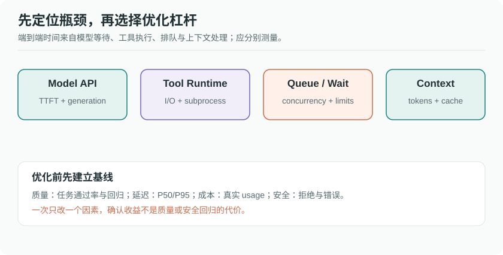
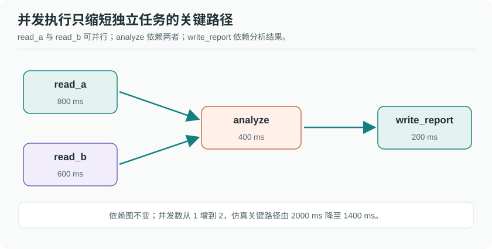

Agent Performance Engineering：并发、模型路由与成本优化
用可复现任务集拆解 Agent 延迟和成本；只并行独立工作，根据质量阈值路由模型，并通过真实 usage 而不是固定命中率评估缓存。
性能优化的第一步不是调参数，而是测量端到端任务
一个 Coding Agent 的任务耗时可能来自模型首 Token 等待、模型生成、工具运行、排队限流、上下文构造和人工审批。把所有时间都归因于“模型太慢”，很容易优化错地方。成本也不能只看输入 Token：并发模型调用、缓存创建、工具调用和子代理都会影响总账。

对每类任务记录成功率、回归率、P50/P95 延迟、输入/输出/缓存 Token、工具失败率和人工介入次数。不同工作负载应分别统计：一次性问答、代码修改、长时间重构和多 Agent 研究不是同一个样本分布。
并行工具调用：只并行真正独立的工作
Claude 4 及之后的模型可以在有收益时生成多个并行工具调用；API 也提供并行 Tool Use 的控制方式。真正的并行收益来自独立任务：读取不同文件、查询不同服务、对不同维度执行评估。若工具 B 需要工具 A 的输出，就必须等 A 完成后再运行 B。

对写操作还需考虑资源冲突：两个工具同时覆盖同一文件、同时更新同一数据库行，可能比串行更危险。调度器应限制最大并发、执行超时、重试预算和每个资源的并发策略。不能因为“模型一次返回多个 tool_use”就无条件并行启动所有工具。
模型路由：根据任务集实测，不按型号名字写死规则
不同模型在代码理解、规划、修复、测试解释和结构化输出上的质量并不相同。将某个型号固定分配给“所有简单任务”，再把其他任务升级到另一个型号，是一个需要用数据验证的策略，不是跨版本永恒规律。模型版本、上下文窗口、effort 设置、API 限额和定价都会变化。
先建立带有固定样本、固定验收标准的评估集。对每个候选模型记录任务通过率、回归、P95 延迟、真实成本和工具失败情况。只有达到最低质量阈值和延迟约束的候选模型才有资格参加成本比较。最便宜但不能稳定完成任务的模型，不是更优的路由结果。
candidates = (
ModelCandidate("candidate-a", .91, 900, 1.0),
ModelCandidate("candidate-b", .98, 1400, 4.0),
)
choice = select_model(
candidates, min_quality=.90, max_p95_latency_ms=1000
)
print(choice.model_id) # candidate-a这里的 cost 是实验室提供的归一化测量值，不是任何厂商的美元报价。真实系统还要记录所用模型 ID 和版本，而不是只记录可变别名。
Prompt Cache：跟踪缓存统计，而不是追求一个神奇百分比
缓存优化主要作用于重复输入前缀的处理成本与延迟，不等于减少上下文窗口里实际存在的文本。保持稳定系统指令和工具定义的顺序、避免不必要地修改缓存前缀，可能有助于提高复用；但具体命中与重建行为必须通过实际 usage 观测。
Claude Code 的 /usage 可显示 Prompt cache 的会话统计（需要支持该功能的版本），包括缓存读取比例、miss、预期重建等信息。Compaction、工具结果清理、模型切换或前缀变化都可能影响缓存行为。不要把旧稿的 92% 命中率和年度节省金额写成普适经验值。
上下文与工具返回值：降低无效信息比降低字符更重要
工具返回值应提供与当前决策有关的最小数据：文件读取支持范围和分页；搜索支持过滤；日志只返回相关片段；MCP 工具定义按需发现；高体量测试输出可以由子代理总结，再把证据路径交给主代理。减少返回信息不能丢掉可复核的来源和失败上下文。
对长任务，比较 Context Editing、Compaction 和子代理委派带来的质量与成本变化。压缩可能导致重要约束丢失，子代理会额外消耗模型调用，工具搜索会增加一次发现步骤；每一种方法都需要在任务集上验证最终通过率和人类返工率。
一个依赖感知的性能规划器
examples/performance_planner.py 接收任务依赖图、测得的执行时间和最大 worker 数，计算一个确定性的教学调度表。它同时提供一个基于实测质量、P95 延迟和归一化成本的模型选择函数。
items = (
WorkItem("read_a", 800),
WorkItem("read_b", 600),
WorkItem("analyze", 400, ("read_a", "read_b")),
WorkItem("write_report", 200, ("analyze",)),
)
plan = schedule(items, max_workers=2)
for item in plan:
print(item.name, item.worker, item.start_ms, item.end_ms)调度器不调用真实工具，也不模拟资源争用、API 限流或异步 I/O。它的用途是证明：依赖关系必须先于并行度，且任务关键路径才决定理论完工时间。
可复现的优化循环：一次只改变一个变量
- 冻结一组代表性任务、模型版本、工具权限、测试和环境。
- 记录基线：通过率、回归、P50/P95、Token、工具调用数和人工介入。
- 定位最大瓶颈：API、工具、排队、上下文或人工审批。
- 只修改一个策略：并发上限、工具结果裁剪、模型路由或缓存前缀。
- 重复相同任务，报告分布和置信范围；检查质量和安全是否回归。
- 将收益稳定的配置版本化；不再有效时回滚。
不要根据一次任务的偶然结果推算年度节省金额，也不要把多个相互重叠的优化收益简单相加。
参考资料
- Parallel tool use — 模型并行工具调用和执行策略
- Claude Code Costs — /usage、缓存统计、模型选择与成本管理
- Claude Code Model Configuration — 模型别名、版本、effort 与 fallback
- Claude Platform Cost Optimization — 缓存、Token hygiene、模型与质量成本权衡
- Claude Prompt Caching — 缓存前缀、有效期与失效行为